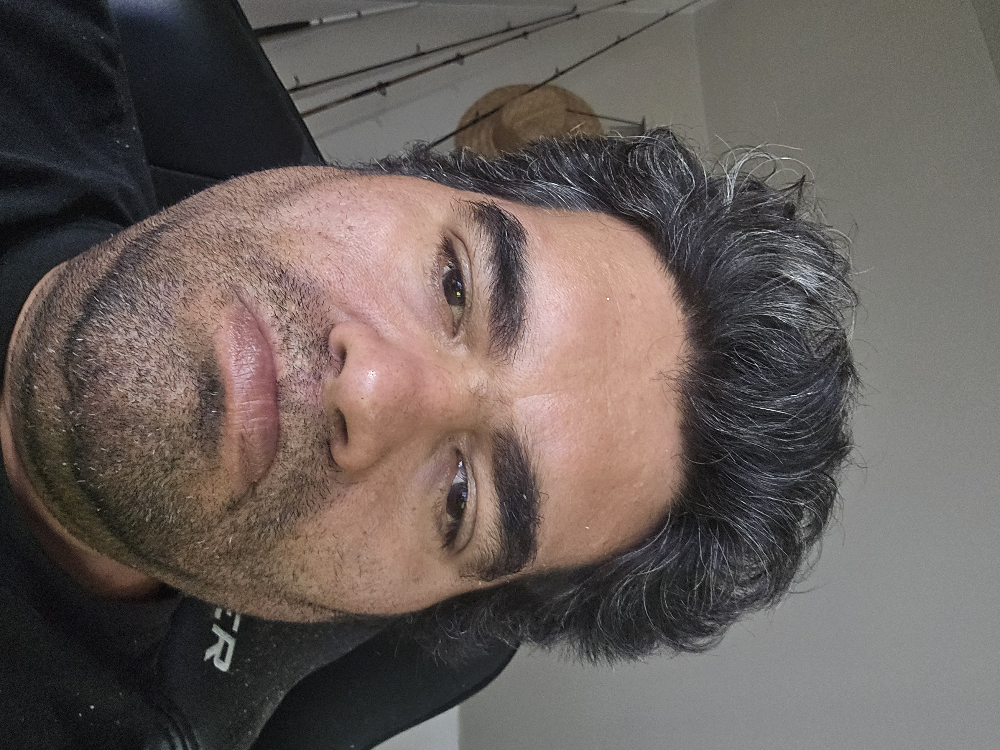

Experienced in JavaScript and Python.
Passionate about creating efficient and scalable web applications.
I am diversed in the Field of Computer Science. I am well equipped in learning Computer Science and its overall currciculum. I have a profound GPA Score: 3.8 at the University. My ability include the diverse structure of Computers to handling systematic files in SQL. Experiences are in the area of Software Engineering, which include the structure of any modern software development enterprise. HTML 5 and CSS 3. And, dynamically using JavaScript for the underlying schematics. I have several years in experience in these technologies. Profoundly, the software fields needs candidates of the Python language to apply its inner structure. I also have experience with React. Proof of that is systematically doing or using this library to help myself. The Goal here is to become fully immerse in Software Development. I've been or have the knowledge in these topics. Plus, I haved countless hours in the field of AI and Machine Learning!
My goal is to become a Full-Stack Developer and contribute to innovative projects that make a positive impact on society. I am innovative and always looking for new challenges. Today I decided to make this dynamic Portfolio of me and my goals and skills in the industry. Before I start, I want to thank you for taking the time to view my portfolio. This means a lot to me! It all started July 4 of 2017 when I applied at the University. From here I took the steps and effort to start Reading on books that applied to my field. I haved read the great book Head First Intro to HTML and CSS published by O'Reilly. There I branched out into different areas of web development. Taking on new projects and challenges has been an exciting journey. I haved been to Programmers Coach that teaches C# and Merit America which taught me Cyber Security. I am Pursuing The LearnCodeTheHardWay and Internet Made Coder platform. I Have several books in Software Development and plan to read them all.